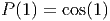
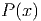
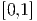
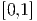
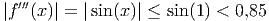

Outra maneira clássica de resolver o problema da interpolação polinomial é através dos polinômios de Lagrange. Dado um conjunto de pontos  distintos dois a dois, definimos os polinômios de Lagrange como os polinômios de grau  que satisfazem
 que interpola os pontos dados, tais
 é dado por
que interpola os pontos dados, tais
 é dado por
Para construir os polinômios de Lagrange, podemos analisar a sua forma fatorada, ou seja:
 :
:
Observação 6.3.1. O problema de interpolação quando escrito usando como base os polinômios de Lagrange produz um sistema linear diagonal.
Exemplo 6.3.1. Encontre o polinômio da forma  que passa pelos pontos